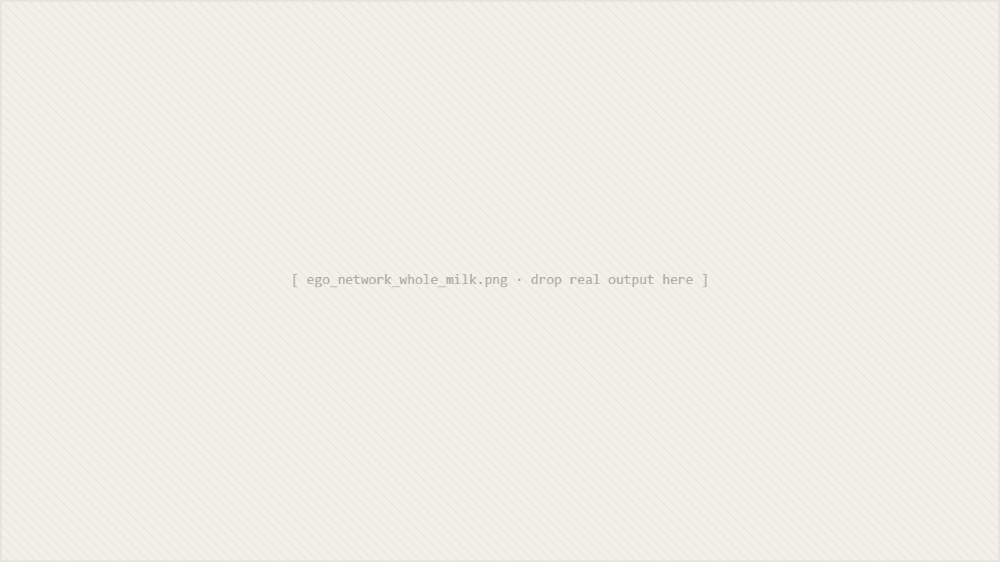
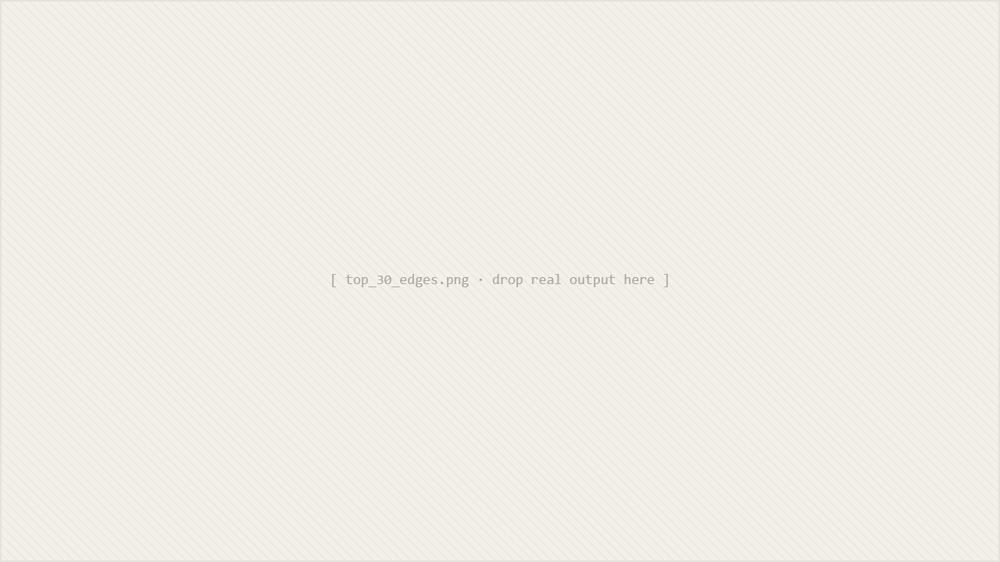
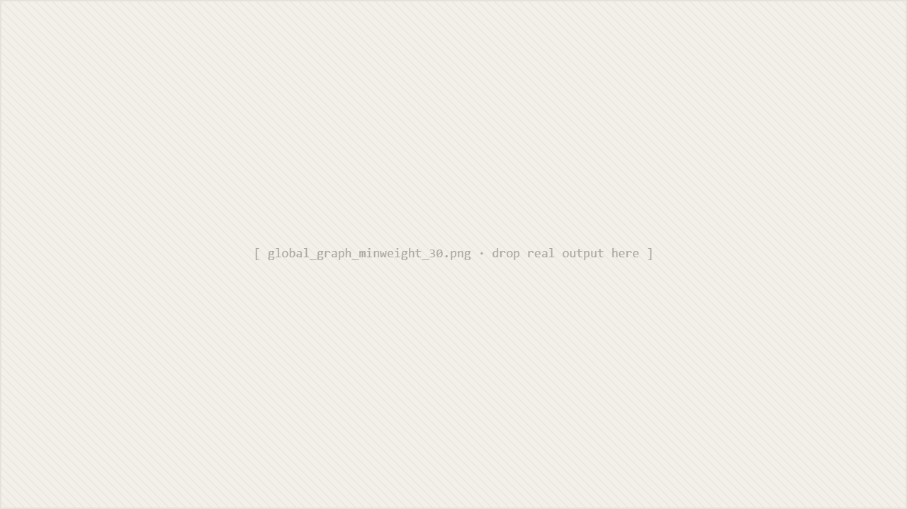

01The problem
Two questions a retailer asks constantly. What should sit next to what on the shelf, and what should we promote together? Both reduce to the same underlying question.
Which items do customers actually buy together. Not in theory, not based on category, but in practice across real baskets. The dataset I worked with had a year of supermarket transactions: 14,963 baskets, 38,765 line items, 167 unique products. Small by data-engineering standards, but big enough that intuition runs out fast and you need a structure to query.
02Approach
I modelled the transactions as a weighted undirected graph. Items are nodes, and a shared basket creates a weighted edge between every pair of items in it. The weight is the count of baskets that contain both products.
The reason this is a natural fit, rather than a clever one, is that the retailer's questions map directly to graph queries. Once the graph exists, most analyses are one or two operations away:
| Question | Graph operation | Cost |
|---|---|---|
| What goes with X? | neighbors(X), sorted by edge weight | O(deg(X)) |
| What are the strongest bundles overall? | top-K edges globally | O(E log K) |
| Are X and Y often bought together? | edge lookup | O(1) |
| What's related to X within 2 hops? | BFS with weight threshold | O(V + E) |

03Key decisions
Two choices shaped the rest of the project:
04The finding
13 of the top 20 product bundles include whole milk.
Whole milk appears in 2,363 of 14,963 baskets, around 16%, which makes it the gravitational centre of the store. Any recommender or promotional strategy built naively on this data will keep surfacing "and whole milk" as a recommendation regardless of what you query.
Top edges shown for illustration. Full ranking lives in the repo.

Honest limitation
Raw co-purchase counts are biased toward popular items. Whole milk dominates partly because of its frequency, not necessarily because people intentionally pair it with everything.
The correct metric is lift: how much more than chance is this pair bought together. With lift, the whole-milk noise drops out and genuinely surprising pairs surface. The case study documents this, with a v2 plan that adds lift, confidence, customer segmentation, and a time dimension.
05Engineering
The point was not just the analysis. The project was also a chance to ship a small Python package that behaves like real software:
- 95 tests covering I/O, transaction building, graph construction, BFS, analysis queries, and visualisation. Written alongside the code, not after.
- CI on three Python versions via GitHub Actions. If a change breaks on 3.10 but works on 3.12, the badge tells you before the user does.
- Modular architecture. Each concern in its own module with a small public API. The graph data structure does not know about CSV parsing, and the analysis queries do not know about plotting.
- Input validation. CSV size limits, parameter clamping on top-K and weight thresholds, sanitised filenames for user-provided output paths. Boring, necessary, the kind of thing a tool collects only when someone has actually tried to break it.

= 30" loading="lazy" onerror="this.style.display='none'; this.nextElementSibling.style.display='flex';" />06What I'd do differently
The improvements I would make in a v2, in order of payoff:
- Switch the edge weight to lift, with raw counts kept as a secondary view. This is the single change that removes whole-milk dominance and turns the graph into something a category manager would actually act on.
- Confidence as a directional metric. "If a customer buys X, what is the probability they also buy Y" is a different question from "how often do X and Y co-occur," and the directional asymmetry matters for shelving and bundling.
- Customer segmentation. Aggregating across all baskets hides the fact that families with infants and single shoppers have very different graphs. A segment-aware analysis is the first real product step.
- Time dimension. Seasonality is invisible in an annual aggregation. The same graph, sliced monthly, would say something useful about promotions.
The broader thing I am taking forward: a dataset can have a gravitational centre that quietly biases every result, and a case study that pretends it does not is worse than one that names it. Recruiters and clinicians and category managers all want the same thing from this kind of work, which is honesty about where the model breaks.